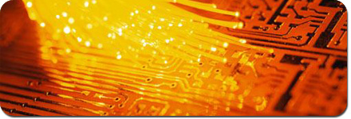

|

Services
Custom
Applications
Novak has designed and deliver many different
custom products to meet custom specifications. Main areas of expertise are
specialty power supplies in the power range of 10 to 20,000 Watts and
microprocessor controlled products. We have provided this service for world
class companies such as Visteon, Motorola, Philips, Flextronics, Honeywell and
others. Building upon the many custom and standard products can often result in
quality cost effective solutions.
Service and Technical Support
Novatek provides service and technical support for
products manufactured since 1993.
Assembly services:
Mid, Low and Prototype volume assemby services are
provided by Novak’s manufacturing plant.
|